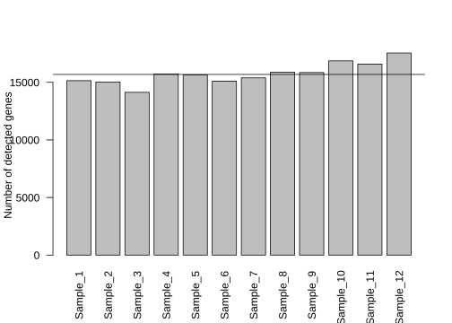
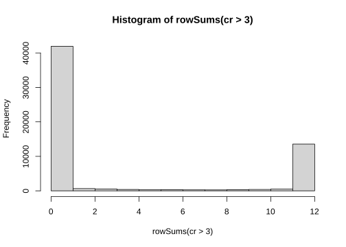
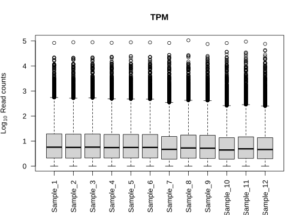
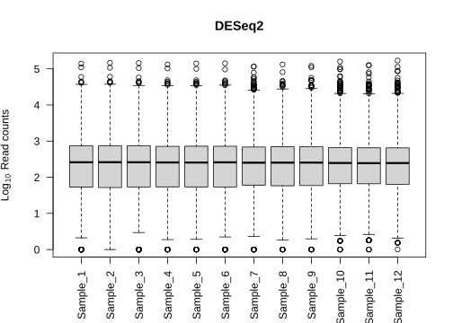
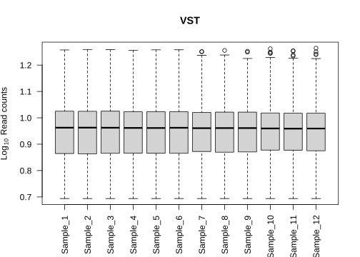
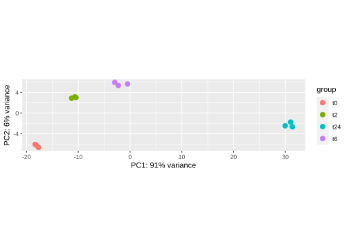
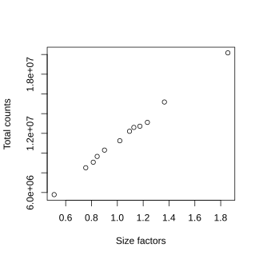
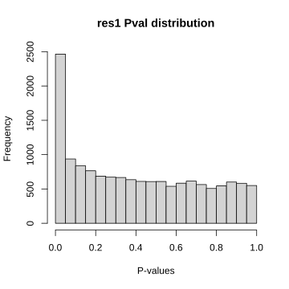
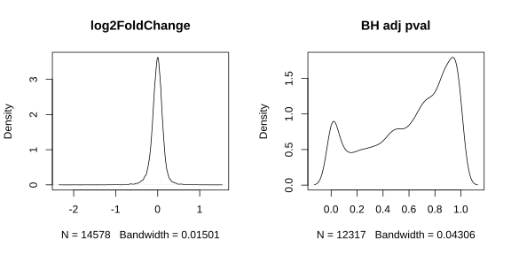
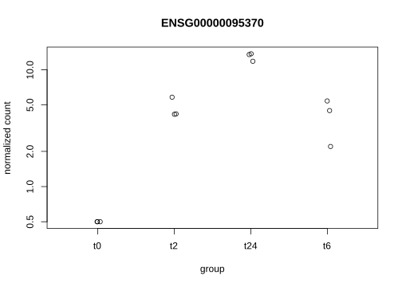

DGE Workflow
Workshop on RNA-Seq
Create a directory named data in your current working directory for input and output files.
Load R packages.
# data handling
library(dplyr)
#library(tidyr)
#library(stringr)
# plotting
library(ggplot2)
library(gridExtra) # combining ggplots
library(biomaRt) # annotation
library(DESeq2) # rna-seq
library(edgeR) # rna-seq
# source download function
source("https://raw.githubusercontent.com/NBISweden/workshop-RNAseq/master/assets/scripts.R")1 Data preprocessing
Data preprocessing is done in R. First, we read in the count table.
download_data("data/counts_raw.txt")
cr <- read.table("./data/counts_raw.txt",header=TRUE)
head(cr)
str(cr)## Sample_1 Sample_2 Sample_3 Sample_4 Sample_5 Sample_6 Sample_7
## ENSG00000000003 321 303 204 492 455 359 376
## ENSG00000000005 0 0 0 0 0 0 0
## ENSG00000000419 696 660 472 951 963 689 706
## ENSG00000000457 59 54 44 109 73 66 60
## ENSG00000000460 399 405 236 445 454 374 316
## ENSG00000000938 0 0 0 0 0 1 0
## Sample_8 Sample_9 Sample_10 Sample_11 Sample_12
## ENSG00000000003 523 450 950 760 1436
## ENSG00000000005 0 0 0 0 0
## ENSG00000000419 1041 796 1036 789 1413
## ENSG00000000457 125 74 108 115 174
## ENSG00000000460 505 398 141 168 259
## ENSG00000000938 0 0 1 0 0
## 'data.frame': 59573 obs. of 12 variables:
## $ Sample_1 : int 321 0 696 59 399 0 0 844 535 493 ...
## $ Sample_2 : int 303 0 660 54 405 0 0 808 458 444 ...
## $ Sample_3 : int 204 0 472 44 236 0 1 495 290 308 ...
## $ Sample_4 : int 492 0 951 109 445 0 2 1065 722 511 ...
## $ Sample_5 : int 455 0 963 73 454 0 0 1037 693 523 ...
## $ Sample_6 : int 359 0 689 66 374 1 0 839 574 350 ...
## $ Sample_7 : int 376 0 706 60 316 0 1 723 406 370 ...
## $ Sample_8 : int 523 0 1041 125 505 0 0 1266 623 579 ...
## $ Sample_9 : int 450 0 796 74 398 0 0 984 545 497 ...
## $ Sample_10: int 950 0 1036 108 141 1 0 1044 487 637 ...
## $ Sample_11: int 760 0 789 115 168 0 1 877 446 548 ...
## $ Sample_12: int 1436 0 1413 174 259 0 1 1428 648 878 ...The count data shows read counts across samples and genes. The columns denote samples and rows denote genes.
Read in the metadata. Each row corresponds to a sample. The sample names can be added as row names.
download_data("data/metadata_raw.txt")
mr <- read.csv2("./data/metadata_raw.txt",header=TRUE,stringsAsFactors=F)
rownames(mr) <- mr$Sample_ID
head(mr)
str(mr)## Sample_ID Sample_Name Time Replicate Cell
## Sample_1 Sample_1 t0_A t0 A A431
## Sample_2 Sample_2 t0_B t0 B A431
## Sample_3 Sample_3 t0_C t0 C A431
## Sample_4 Sample_4 t2_A t2 A A431
## Sample_5 Sample_5 t2_B t2 B A431
## Sample_6 Sample_6 t2_C t2 C A431
## 'data.frame': 12 obs. of 5 variables:
## $ Sample_ID : chr "Sample_1" "Sample_2" "Sample_3" "Sample_4" ...
## $ Sample_Name: chr "t0_A" "t0_B" "t0_C" "t2_A" ...
## $ Time : chr "t0" "t0" "t0" "t2" ...
## $ Replicate : chr "A" "B" "C" "A" ...
## $ Cell : chr "A431" "A431" "A431" "A431" ...The metadata columns are sample name and time points. It is a good idea to check that the number of columns of data match the number of rows of metadata. The column names of data must also match the row names of metadata.
all.equal(colnames(cr),rownames(mr))## [1] TRUELet’s create a boxplot to visualise the distribution of counts.
boxplot(log10(as.matrix(cr)+1),ylab=expression('Log'[10]~'Read counts'),las=2,
main="Raw data")
The median values are zero across all samples. Around half the values in each sample are zeros. This data set would benefit from a low count filtering.
We can check if any samples need to be discarded based on the number of genes detected. We create a barplot of genes detected across samples.
{barplot(colSums(cr>3),ylab="Number of detected genes",las=2)
abline(h=median(colSums(cr>3)))}
On average, about 15000 genes are detected. All samples are more or less close to the average. None of the samples look bad enough to be removed.
What does cr>3 do? Why did we use 3? Is it better than using cr>0?
And we can create a similar plot for detection rate across genes.
{barplot(rowSums(cr>3),xlab="Genes",ylab="Number of samples",names.arg="")
abline(h=median(rowSums(cr>3)),col="red")}
This is harder to see. It’s perhaps easier to plot a histogram.
hist(rowSums(cr>3))
There are a lot of genes that are not expressed (ie; zero on x-axis). These can be removed completely. We are really interested in the peak on the right. These are genes that are expressed in all samples. We don’t want to be too restrictive, so we will choose to keep genes that are expressed in atleast 3 samples.
Below, rather than using zero as the minimum value for detection, we used minimum of 1 count-per-million (CPM). This ignores noisy background counts. And we want to keep genes that have minimum 1 CPM across 2 samples (since each of test groups consist of 3 samples).
# remove genes with low counts
keepgenes <- rowSums(edgeR::cpm(cr)>1) >= 2
cf <- cr[keepgenes,]How would the results change if we used total number of samples (ie; 12 for this dataset) in the code above?
Distribution of the filtered counts looks like below. Compare this to the previous boxplot above.
boxplot(log10(as.matrix(cf)+1),ylab=expression('Log'[10]~'Read counts'),las=2,
main="Filtered data")
The missingness in the data set is reduced. The filtering process has removed 44995 genes with low counts.
Since no samples were discarded, the metadata file will remain the same. And we can check that the labels are the same order in counts and metadata.
all.equal(colnames(cf),rownames(mr))## [1] TRUEAt this point, we can save the filtered data.
write.table(cf,"./data/counts_filtered.txt",col.names=T,quote=F,sep="\t",dec=".")2 Normalisation
The raw count data needs to be corrected for various biases before statistical inference. If the data set is to be used in an R package for differential gene expression such as DESeq2, edgeR or Limma, the raw data must be used directly. This is because, these packages handle the correction and transformation internally.
2.1 CPM/TPM
For analysis other than DGE, the data set must be corrected before use. The most basic correction required is sequencing depth. This is achieved using rescaling the counts to counts per million.
We read in out filtered count data and metadata. We can use the function cpm() from R package edgeR for this.
download_data("data/counts_filtered.txt")
cf <- read.table("data/counts_filtered.txt",header=TRUE)
download_data("data/metadata_raw.csv")
mr <- read.csv2("data/metadata_raw.csv",header=TRUE,stringsAsFactors=F)
rownames(mr) <- mr$Sample_IDcc <- edgeR::cpm(cf)
boxplot(log10(as.matrix(cc)+1),ylab=expression('Log'[10]~'Read counts'),las=2,main="CPM")
But, CPM data has some drawbacks. It is not suitable for within-sample comparisons. The total number of reads per sample varies from sample to sample. This also makes it harder to compare one experiment to another. In addition, gene length is not controlled for in this correction. RPKM/FPKM normalisations correct for gene length, but they are not recommended because they are not comparable between samples.
A better correction method that resolves these issues is TPM (transcripts-per-million). The code for computing TPM is simple.
#' @title Compute TPM from a read count matrix
#' @param counts A numeric data.frame of read counts with samples (columns) and genes (rows).
#' @param len A vector of gene cds length equal to number of rows of dfr.
#'
#' https://support.bioconductor.org/p/91218/
#'
tpm <- function(counts,len) {
x <- counts/len
return(t(t(x)*1e6/colSums(x)))
}We read in the annotation data, remove duplicated ensembl IDs and compute gene lengths.
download_data("data/human_genes.txt")
g <- read.delim("data/human_genes.txt",header=T,stringsAsFactors=F)
g <- g[!duplicated(g$ensembl_gene_id),]
g$len <- g$end_position-g$start_position
rownames(g) <- g$ensembl_gene_idNext, we find shared genes between count data and annotation data and match their order.
igenes <- intersect(rownames(cf),g$ensembl_gene_id)
g1 <- g[igenes,]
cf1 <- cf[igenes,]
all.equal(rownames(cf1),g1$ensembl_gene_id)## [1] TRUEct <- tpm(cf1,g1$len)
boxplot(log10(as.matrix(ct)+1),ylab=expression('Log'[10]~'Read counts'),las=2,main="TPM")
This is the distribution of TPM counts.
2.2 DESeq2
DESeq2 internally corrects counts for sequencing depth and RNA compositional bias using Median of ratios method. The details of this method are described further below under DGE size factors. To run this method, we create a DESeq2 object using the count data and metadata.
library(DESeq2)
mr$Time <- factor(mr$Time)
d <- DESeqDataSetFromMatrix(countData=cf,colData=mr,design=~Time)
d <- DESeq2::estimateSizeFactors(d,type="ratio")
cd <- counts(d,normalized=TRUE)
saveRDS(cd,"data/counts_normalised_deseq2.Rds")cd <- readRDS("data/counts_normalised_deseq2.Rds")
boxplot(log10(as.matrix(cd)+1),ylab=expression('Log'[10]~'Read counts'),las=2,main="DESeq2")
2.3 VST
For the purpose of exploratory analysis such as MDS, PCA, clustering etc, VST (variance-stabilizing-transformation) is recommended. VST is also run using DESeq2. As in the previous step, a DESeq2 object is created.
library(DESeq2)
mr$Time <- factor(mr$Time)
d <- DESeqDataSetFromMatrix(countData=cf,colData=mr,design=~Time)
d <- DESeq2::estimateSizeFactors(d,type="ratio")
d <- DESeq2::estimateDispersions(d)
cv <- as.data.frame(assay(varianceStabilizingTransformation(d,blind=T)),check.names=F)
if(!file.exists("./data/counts_vst.txt")) {
write.table(cv,"./data/counts_vst.txt",sep="\t",dec=".",quote=FALSE)
}
boxplot(log10(as.matrix(cv)+1),ylab=expression('Log'[10]~'Read counts'),las=2,main="VST")
The effect of VST transformation can be clearly seen in a mean vs variance plot.
rowVar <- function(x) apply(x,1,var)
par(mfrow=c(2,2))
plot(log10(rowMeans(cf)+1),log10(rowVar(cf)+1),xlab=expression('Log'[10]~'Mean count'),ylab=expression('Log'[10]~'Variance'),main="Filtered")
plot(log10(rowMeans(ct)+1),log10(rowVar(ct)+1),xlab=expression('Log'[10]~'Mean count'),ylab=expression('Log'[10]~'Variance'),main="TPM")
plot(log10(rowMeans(cd)+1),log10(rowVar(cd)+1),xlab=expression('Log'[10]~'Mean count'),ylab=expression('Log'[10]~'Variance'),main="DESeq2")
plot(rowMeans(cv),rowVar(cv),xlab='Mean count',ylab='Variance',main="VST")
par(mfrow=c(1,1))
For RNA-seq data, as the mean count value increases, the variance increases. There is a strong almost linear relationship as seen in the figures. The statistical methods such as PCA expects similar variance across the range of mean values. If not, the higher variance genes will contribute more than the lower variance genes. Such data is said to be heteroscedastic and needs to be corrected. Correction using log transformation (with pseudocount) now gives inflates the contribution of the low variance genes. To obtain similar variance across the whole range of mean values, DESeq2 offers two methods VST (variance stabilising transformation) and RLOG (regularised log transformation).
As the name suggests, VST transformation stabilizes variance across the whole range of count values. VST is recommended for clustering or visualisation. It is not intended for differential gene expression. If the size factors vary dramatically between samples, then RLOG transformation is recommended.
Finally, we can compare all of the various transformations in a single plot.
par(mfrow=c(1,4))
boxplot(log10(as.matrix(cf)+1),ylab=expression('Log'[10]~'Read counts'),las=2,main="Filtered")
boxplot(log10(as.matrix(ct)+1),ylab=expression('Log'[10]~'Read counts'),las=2,main="TPM")
boxplot(log10(as.matrix(cd)+1),ylab=expression('Log'[10]~'Read counts'),las=2,main="DESeq2")
boxplot(as.matrix(cv),ylab='Read counts',las=2,main="VST")
par(mfrow=c(1,1))
Would it be possible to have one perfect normalisation method for all types of analyses? Is there any drawback to using gene length corrected counts in differential gene expression analyses?
3 Exploratory
In this section, we are strictly not running any quantitative analyses or statistical test. This is a QC of the counts. We are running correlation to check similarity of gene counts between samples. We are running distance based clustering and PCA to estimate similarity between samples. This should give us an idea of the variation within your sample groups and detect possible outliers or mis-labelled samples.
We will use the variance stabilized counts (VST) from the previous step for all exploratory analyses. Otherwise, the files below can also be downloaded.
download_data("data/counts_vst.txt")
cv <- read.table("data/counts_vst.txt",header=TRUE)
download_data("data/metadata_raw.csv")
mr <- read.csv2("data/metadata_raw.csv",header=TRUE,stringsAsFactors=F)
rownames(mr) <- mr$Sample_ID3.1 Correlation
It is a good idea to start by checking correlation between samples. RNA-Seq samples generally have very high correlation (R^2 > 0.9). R^2 values below 0.8 may be an indication of an outlier sample. Depending on other QC metric, these low correlation samples may be discarded from analyses.
We use the function cor() for computing sample-to-sample Spearman correlation. Note that the input matrix has genes as rows and samples as columns. This generates a sample-to-sample pairwise correlation matrix. This matrix can be plotted as a heatmap using the pheatmap() function from the pheatmap R package.
dmat <- as.matrix(cor(cv,method="spearman"))
library(pheatmap)
pheatmap(dmat,border_color=NA,annotation_col=mr[,"Time",drop=F],
annotation_row=mr[,"Time",drop=F],annotation_legend=T)
In the matrix, red colour denotes higher correlation (higher similarity) and blue denotes lower correlation (lower similarity). pheatmap() also hierarchically clusters rows and columns based on correlation values. The dendrograms show how samples cluster. Annotation colours denote Time groups. Notice that samples group by Time.
3.2 PCA
To run PCA, we use the R function prcomp(). It takes in a matrix where samples are rows and variables are columns. Therefore, we transpose our count matrix using the function t(). If we do not transpose, then PCA is run on the genes rather than the samples. The next line of code plots the variance explained by the top PCs.
pcaobj <- prcomp(x=t(cv))
{barplot(round(pcaobj$sdev^2/sum(pcaobj$sdev^2)*100,2),las=2,
names.arg=colnames(pcaobj$x),ylab="% Variance explained",
xlab="PCA principal components")
abline(h=2, lty=2)}
The first two principal components in total explain 85% (75%+10%) of the variance in the data set. This means a scatterplot of PC1 vs PC2 can help to visualise the most important trend in the data. Then we merge the rotated data with the metadata and plot a scatterplot coloured by our variable of interest (Time).
pcamat1 <- as.data.frame(pcaobj$x)
pcamat2 <- merge(pcamat1,mr,by=0)
ggplot(pcamat2,aes(PC1,PC2,colour=Time))+
geom_point()+
theme_bw()
Samples cluster by the Time variable as expected.
Sometimes the first two PCs may not be the ones that will best separate the sample groups, so it is a good idea to look at more PCs.
p1 <- ggplot(pcamat2,aes(PC1,PC3,colour=Time))+
geom_point()+
theme_bw()
p2 <- ggplot(pcamat2,aes(PC2,PC3,colour=Time))+
geom_point()+
theme_bw()
gridExtra::grid.arrange(p1,p2,nrow=1,ncol=2)An alternative way to create a PCA plot is directly from the DESeq2 object using the DESeq2 function plotPCA().
plotPCA(varianceStabilizingTransformation(d),intgroup="Time")
3.3 Clustering
For clustering, we create a sample-to-sample pairwise distance matrix (here we use euclidean distance). The rows and columns of this matrix is then hierarchically clustered. We use the function dist() to compute the distance. Note that for a sample-to-sample matrix, the rows need to be samples and columns should be genes. Therefore, we use the function t() to transpose our VST normalised count matrix.
dmat <- as.matrix(dist(t(cv)))
library(pheatmap)
pheatmap(dmat,border_color=NA,annotation_col=mr[,"Time",drop=F],
annotation_row=mr[,"Time",drop=F],annotation_legend=T)
Hierarchically clustered sample-to-sample euclidean distance matrix. Larger distances mean lower similarity and vice-versa. In the matrix, red colour denotes larger distance (lower similarity) and blue denotes small distance (higher similarity). Annotation colours denote Time groups. The dendrogram helps to visualise sample clustering. Notice that samples group by Time.
Try to run the PCA using one of the other normalisation methods, say logCPM and/or DESeq2 normalised counts. How different are the results? How do samples group? Can these differences be explained?
4 DGE
For differential gene expression, we use the DESeq2 package. We use the raw filtered counts and metadata.
download_data("data/counts_filtered.txt")
cf <- read.table("data/counts_filtered.txt",header=TRUE)
download_data("data/metadata_raw.csv")
mr <- read.csv2("data/metadata_raw.csv",header=TRUE,stringsAsFactors=F)
rownames(mr) <- mr$Sample_IDThe data is converted to a DESeq2 object. The GLM model we use is simple since we only have one variable of interest ~Time.
If we had other covariates to control for, we would add them to the model like so ~var+Time. The variable of interest appears in the end. This model means find differentially expressed genes between groups under ‘time’ variable while controlling for the effect of ‘var’. Similarily, batch effects can be controlled by specifying them in the model ~batch+Time.
library(DESeq2)
mr$Time <- factor(mr$Time)
d <- DESeqDataSetFromMatrix(countData=cf,colData=mr,design=~Time)4.1 Size factors
The first step is estimating size factors. The data is normalised for sequencing depth and compositional bias as done for the VST step. DESeq2 uses a method called median-of-ratios for this step.
d <- DESeq2::estimateSizeFactors(d,type="ratio")Optional
For those interested in the details of the median-of-ratios method, click below.
<button class=“btn btn-sm btn-primary btn-collapse btn-collapse-optional collapsed type=”button" data-toggle=“collapse” data-target=“#dge-size-factor” aria-expanded=“false” aria-controls=“dge-size-factor”>
This is a step-by-step guide to computing normalisation factors (size factors) using the median-of-ratios method.
- The geometric mean is computed across all samples for each gene.
gm_mean = function(x, na.rm=TRUE){
exp(sum(log(x[x > 0]), na.rm=na.rm) / length(x))
}
gmean <- apply(cf,1,gm_mean)
head(gmean)## ENSG00000000003 ENSG00000000419 ENSG00000000457 ENSG00000000460 ENSG00000001036
## 479.11181 820.01611 81.68888 319.29571 920.13961
## ENSG00000001084
## 520.55995- Read counts for each gene is divided by the geometric mean of that gene to create a ratio.
ratio <- cf/gmean
head(ratio)[,1:5]## Sample_1 Sample_2 Sample_3 Sample_4 Sample_5
## ENSG00000000003 0.6699898 0.6324202 0.4257879 1.026900 0.9496739
## ENSG00000000419 0.8487638 0.8048622 0.5755984 1.159733 1.1743672
## ENSG00000000457 0.7222525 0.6610447 0.5386290 1.334331 0.8936344
## ENSG00000000460 1.2496253 1.2684166 0.7391267 1.393692 1.4218794
## ENSG00000001036 0.9172521 0.8781276 0.5379618 1.157433 1.1270029
## ENSG00000001084 1.0277395 0.8798218 0.5570924 1.386968 1.3312588- The median ratio for each sample (across all genes) is taken as the size factor for that sample.
sf <- apply(ratio,2,median)
sf## Sample_1 Sample_2 Sample_3 Sample_4 Sample_5 Sample_6 Sample_7 Sample_8
## 0.8975253 0.8407580 0.5086763 1.1263621 1.0931051 0.8123073 0.7558324 1.1745210
## Sample_9 Sample_10 Sample_11 Sample_12
## 1.0193067 1.3720949 1.2387549 1.8679810We can verify that these values are correct by comparing with size factors generated by DESeq2.
# deseq2 size factors
sizeFactors(d)## Sample_1 Sample_2 Sample_3 Sample_4 Sample_5 Sample_6 Sample_7 Sample_8
## 0.9003753 0.8437393 0.5106445 1.1276451 1.0941383 0.8133849 0.7553903 1.1744008
## Sample_9 Sample_10 Sample_11 Sample_12
## 1.0189325 1.3642797 1.2325485 1.8555904If we plot the size factors for each sample against the total counts for each sample, we get the plot below. We can see that they correlate very well. Size factors are mostly correcting for total counts, ie; sequencing depth.
plot(sizeFactors(d),colSums(cf),xlab="Size factors",ylab="Total counts")
The raw counts can then be divided by the size factor to yield normalised read counts.
# custom
head(t(t(cf)/sf))[,1:5]
# deseq2
head(counts(d,normalized=TRUE))[,1:5]## Sample_1 Sample_2 Sample_3 Sample_4 Sample_5
## ENSG00000000003 357.65009 360.38907 401.04088 436.80445 416.24541
## ENSG00000000419 775.46562 785.00590 927.89851 844.31105 880.97655
## ENSG00000000457 65.73631 64.22776 86.49901 96.77172 66.78223
## ENSG00000000460 444.55572 481.70816 463.94925 395.07720 415.33059
## ENSG00000001036 940.36349 961.03752 973.11390 945.52183 948.67361
## ENSG00000001084 596.08349 544.74652 570.10713 641.00166 633.97378
## Sample_1 Sample_2 Sample_3 Sample_4 Sample_5
## ENSG00000000003 356.51801 359.11565 399.49511 436.30747 415.85236
## ENSG00000000419 773.01102 782.23211 924.32203 843.35041 880.14467
## ENSG00000000457 65.52823 64.00081 86.16561 96.66161 66.71917
## ENSG00000000460 443.14856 480.00607 462.16101 394.62769 414.93840
## ENSG00000001036 937.38692 957.64173 969.36314 944.44605 947.77780
## ENSG00000001084 594.19669 542.82168 567.90972 640.27234 633.37514 The function estimateSizeFactors() has options to set a custom locfunc other than the median. Why is this useful? What happens if you change it to “shorth”. Check out the help page for estimateSizeFactors().
4.2 Gene dispersion
When it comes to comparing values between groups, some measure of variation is needed to estimate the variability in gene counts within groups. Dispersion is a measure of variation in a data set. Variance and standard deviation are not a good measure to estimate variability because it correlates with the mean.
Optional
For some more discussion on dispersion, click below.
<button class=“btn btn-sm btn-primary btn-collapse btn-collapse-optional collapsed type=”button" data-toggle=“collapse” data-target=“#dge-dispersion” aria-expanded=“false” aria-controls=“dge-dispersion”>
We can create a mean counts vs variance plot for all genes in our data set.
dm <- apply(cd,1,mean)
dv <- apply(cd,1,var)
ggplot(data.frame(mean=log10(dm+1),var=log10(dv+1)),
aes(mean,var))+
geom_point(alpha=0.2)+
geom_smooth(method="lm")+
labs(x=expression('Log'[10]~'Mean counts'),y=expression('Log'[10]~'Variance'))+
theme_bw()
We see a mostly linear relationship on the log scale. The blue line denotes a linear fit. Genes that have larger read counts show higher variance. It’s hard to say which genes are more variable based on this alone. Therefore, variance is not a good measure to identify variation in read counts. A measure that controls for this mean-variance relationship is what we need.
One option is the coefficient of variation (CV).
cva <- function(x) sd(x)/mean(x)
dc <- apply(cd,1,cva)
ggplot(data.frame(mean=log10(dm+1),var=dc),
aes(mean,var))+
geom_point(alpha=0.2)+
geom_smooth()+
labs(x=expression('Log'[10]~'Mean counts'),y="Coefficient of variation")+
theme_bw()
Now, we see that genes with lower counts have higher variability and genes with larger counts have lower variability. A measure like CV is taking the ratio of ‘variation’ to mean. cv=sd(x)/mean(x).
This becomes even more apparent if we compute the CV and mean over replicates within sample groups (Time).
dx1 <- data.frame(t0=apply(cd[,1:3],1,cva),t2=apply(cd[,4:6],1,cva),
t6=apply(cd[,7:9],1,cva),t24=apply(cd[,10:12],1,cva))
dx1$gene <- rownames(dx1)
dx1 <- tidyr::gather(dx1,key=sample,value=cv,-gene)
rownames(dx1) <- paste0(dx1$gene,"-",dx1$sample)
dx2 <- data.frame(t0=apply(cd[,1:3],1,mean),t2=apply(cd[,4:6],1,mean),
t6=apply(cd[,7:9],1,mean),t24=apply(cd[,10:12],1,mean))
dx2$gene <- rownames(dx2)
dx2 <- tidyr::gather(dx2,key=sample,value=mean,-gene)
rownames(dx2) <- paste0(dx2$gene,"-",dx2$sample)
dx3 <- merge(dx1,dx2,by=0)
ggplot(dx3,aes(x=log10(mean+1),y=cv))+
geom_point(alpha=0.2)+
geom_smooth()+
facet_wrap(~sample.x)+
labs(x=expression('Log'[10]~'Mean counts'),y="Coefficient of variation")+
theme_bw()
We find that CV strongly declines with increasing counts. Genes with low counts show higher dispersion. For the sake of completeness, we can also plot the relationship between CV and variance for the same sample groups.
dx1 <- data.frame(t0=apply(cd[,1:3],1,cva),t2=apply(cd[,4:6],1,cva),
t6=apply(cd[,7:9],1,cva),t24=apply(cd[,10:12],1,cva))
dx1$gene <- rownames(dx1)
dx1 <- tidyr::gather(dx1,key=sample,value=cv,-gene)
rownames(dx1) <- paste0(dx1$gene,"-",dx1$sample)
dx2 <- data.frame(t0=apply(cd[,1:3],1,var),t2=apply(cd[,4:6],1,var),
t6=apply(cd[,7:9],1,var),t24=apply(cd[,10:12],1,var))
dx2$gene <- rownames(dx2)
dx2 <- tidyr::gather(dx2,key=sample,value=var,-gene)
rownames(dx2) <- paste0(dx2$gene,"-",dx2$sample)
dx3 <- merge(dx1,dx2,by=0)
ggplot(dx3,aes(x=log10(var+1),y=cv))+
geom_point(alpha=0.2)+
geom_smooth()+
facet_wrap(~sample.x)+
labs(x=expression('Log'[10]~'Variance'),y="Coefficient of variation")+
theme_bw()
DESeq2 computes it’s own version of dispersion in a more robust manner taking into account low count values. The DESeq2 dispersion estimates are inversely related to the mean and directly related to variance. The dispersion estimate is a good measure of the variation in gene expression for a certain mean value.
Now, the variance or dispersion estimate for genes with low counts is unreliable when there are too few replicates. To overcome this, DESeq2 borrows information from other genes. DESeq2 assumes that genes with similar expression levels have similar dispersion values. Dispersion estimates are computed for each gene separately using maximum likelihood estimate. A curve is fitted to these gene-wise dispersion estimates. The gene-wise estimates are then ‘shrunk’ to the fitted curve.
Gene-wide dispersions, fitted curve and shrinkage can be visualised using the plotDispEsts() function.
d <- DESeq2::estimateDispersions(d)
plotDispEsts(d)
The black points denote the maximum likelihood dispersion estimate for each gene. The red curve denote the fitted curve. The blue points denote the new gene dispersion estimates after shrunk towards the curve. The circled blue points denote estimates that are not shrunk as they are too far away from the curve. Thus, shrinkage method is important to reduce false positives in DGE analysis involving too few replicates.
It is a good idea to visually check the dispersion shrinkage plot to verify that the modelling works for your data set.
4.3 Testing
Overdispersion is the reason why RNA-Seq data is better modelled as negative-binomial distribution rather than poisson distribution. Poisson distribution has a mean = variance relationship, while negative-binomial distribution has a variance > mean relationship. The last step in the DESeq2 workflow is fitting the Negative Binomial model for each gene and performing differential expression testing. This is based on the log fold change values computed on the corrected count estimates between groups.
logFC = log2 (corrected counts group A / corrected counts group B)
The most commonly used testing for comparing two groups in DESeq2 is the Walds’s test. The null hypothesis is that the groups are not different and logFC=0. The list of contrasts can be seen using resultsNames(). Then we can pick our comparisons of interest.
dg <- nbinomWaldTest(d)
resultsNames(dg)## [1] "Intercept" "Time_t2_vs_t0" "Time_t24_vs_t0" "Time_t6_vs_t0"And we can get the result tables for the three different comparisons. The summary of the result object shows the number of genes that are differentially expressed with positive or negative fold-change and outliers.
res1 <- results(dg,name="Time_t2_vs_t0",alpha=0.05)
summary(res1)
res2 <- results(dg,name="Time_t24_vs_t0",alpha=0.05)
summary(res2)
res3 <- results(dg,name="Time_t6_vs_t0",alpha=0.05)
summary(res3)##
## out of 14578 with nonzero total read count
## adjusted p-value < 0.05
## LFC > 0 (up) : 413, 2.8%
## LFC < 0 (down) : 696, 4.8%
## outliers [1] : 0, 0%
## low counts [2] : 2261, 16%
## (mean count < 26)
## [1] see 'cooksCutoff' argument of ?results
## [2] see 'independentFiltering' argument of ?results
##
##
## out of 14578 with nonzero total read count
## adjusted p-value < 0.05
## LFC > 0 (up) : 5066, 35%
## LFC < 0 (down) : 5093, 35%
## outliers [1] : 0, 0%
## low counts [2] : 0, 0%
## (mean count < 3)
## [1] see 'cooksCutoff' argument of ?results
## [2] see 'independentFiltering' argument of ?results
##
##
## out of 14578 with nonzero total read count
## adjusted p-value < 0.05
## LFC > 0 (up) : 2484, 17%
## LFC < 0 (down) : 2856, 20%
## outliers [1] : 0, 0%
## low counts [2] : 0, 0%
## (mean count < 3)
## [1] see 'cooksCutoff' argument of ?results
## [2] see 'independentFiltering' argument of ?resultsYou can also build up the comparison using contrasts. Contrats need the condition, level to compare and the reference level (base level). For example, results(dg,contrast=c("Time","t2","t0"),alpha=0.05).
Note that in both cases above, t0 is the reference level and other levels are compared to this. Therefore, a fold-change of 2 would mean that, a gene is 2 fold higher expressed in the test level compared to t0.
The results() function has many useful arguments. One can set a threshold on the logFC values using lfcThreshold. By default, no filtering is performed based on logFC values. Outliers are detected and p-values are set to NA automatically using cooksCutoff. independentFiltering remove genes with low counts.
head(res1)## log2 fold change (MLE): Time t2 vs t0
## Wald test p-value: Time t2 vs t0
## DataFrame with 6 rows and 6 columns
## baseMean log2FoldChange lfcSE stat pvalue
## <numeric> <numeric> <numeric> <numeric> <numeric>
## ENSG00000000003 490.0172 0.2206198 0.1127611 1.956524 0.0504034
## ENSG00000000419 817.7807 0.0592720 0.1014813 0.584068 0.5591746
## ENSG00000000457 82.0788 0.2077486 0.2204049 0.942577 0.3458972
## ENSG00000000460 356.0716 -0.1291864 0.1151392 -1.122002 0.2618616
## ENSG00000001036 919.6068 0.0288827 0.0851501 0.339198 0.7344609
## ENSG00000001084 529.5940 0.2119648 0.0929811 2.279655 0.0226281
## padj
## <numeric>
## ENSG00000000003 0.263505
## ENSG00000000419 0.830262
## ENSG00000000457 0.689946
## ENSG00000000460 0.612625
## ENSG00000001036 0.909639
## ENSG00000001084 0.159263The results table contains mean expression value (baseMean), log2 fold change (log2FoldChange), log2 fold change standard error (lfcSE), wald test statistic (stat), wald test p-value (pvalue) and BH adjusted p-value (padj) for each gene.
It is a good idea to look at the distribution on unadjusted p-values.
hist(res1$pvalue[res1$baseMean>1],main="res1 Pval distribution",xlab="P-values")
This is the kind of distribution to be expected when the p-values are “well-behaved”. For more explanation on p-value distributions, see here. If this distribution is very different or strange, then it might indicate an underlying problem.
Note that the results object is a DESeqResults class object and not a data.frame. It can be converted to a data.frame using as.data.frame() for exporting to a file.
We can filter the results table as needed.
# all genes
nrow(as.data.frame(res1))
# only genes with padj <0.05
nrow(filter(as.data.frame(res1),padj<0.05))
# only genes with padj <0.05 and an absolute fold change >2
nrow(filter(as.data.frame(res1),padj<0.05,abs(log2FoldChange)>2))## [1] 14578
## [1] 1109
## [1] 11Note that manually filtering by log2FoldChange on the results table is not the same as setting the lfcThreshold argument in the results() function.
Finally, we can add additional information to our results to make the interpretation and downstream analyses easier. We read in the gene info downloaded through biomaRt.
# convert res to data.frame
df_res <- as.data.frame(res1)
# add row names as a new column
df_res$ensembl_gene_id <- rownames(df_res)
# read genes info
download_data("data/human_genes.txt")
hg <- read.delim("data/human_genes.txt",header=T,sep="\t",stringsAsFactors=F)
hg <- hg[!duplicated(hg$ensembl_gene_id),]
# merge dataframes
df_res1 <- merge(df_res,hg,by="ensembl_gene_id")
head(df_res1)## ensembl_gene_id baseMean log2FoldChange lfcSE stat pvalue
## 1 ENSG00000000003 490.01721 0.22061981 0.11276108 1.9565244 0.05040341
## 2 ENSG00000000419 817.78066 0.05927197 0.10148128 0.5840680 0.55917460
## 3 ENSG00000000457 82.07877 0.20774862 0.22040490 0.9425772 0.34589722
## 4 ENSG00000000460 356.07160 -0.12918638 0.11513918 -1.1220019 0.26186163
## 5 ENSG00000001036 919.60675 0.02888269 0.08515007 0.3391975 0.73446094
## 6 ENSG00000001084 529.59397 0.21196477 0.09298106 2.2796555 0.02262813
## padj entrezgene external_gene_name chromosome_name start_position
## 1 0.2635055 7105 TSPAN6 X 100627109
## 2 0.8302623 8813 DPM1 20 50934867
## 3 0.6899459 57147 SCYL3 1 169849631
## 4 0.6126246 55732 C1orf112 1 169662007
## 5 0.9096386 2519 FUCA2 6 143494811
## 6 0.1592633 2729 GCLC 6 53497341
## end_position strand gene_biotype
## 1 100639991 -1 protein_coding
## 2 50958555 -1 protein_coding
## 3 169894267 -1 protein_coding
## 4 169854080 1 protein_coding
## 5 143511690 -1 protein_coding
## 6 53616970 -1 protein_coding
## description
## 1 tetraspanin 6 [Source:HGNC Symbol;Acc:HGNC:11858]
## 2 dolichyl-phosphate mannosyltransferase subunit 1, catalytic [Source:HGNC Symbol;Acc:HGNC:3005]
## 3 SCY1 like pseudokinase 3 [Source:HGNC Symbol;Acc:HGNC:19285]
## 4 chromosome 1 open reading frame 112 [Source:HGNC Symbol;Acc:HGNC:25565]
## 5 alpha-L-fucosidase 2 [Source:HGNC Symbol;Acc:HGNC:4008]
## 6 glutamate-cysteine ligase catalytic subunit [Source:HGNC Symbol;Acc:HGNC:4311]Now we have annotated our DEG list with information such as gene names, genomic coordinates, biotype etc.
4.3.1 lfcShrink
This is an extra step to generate more accurate log2 fold changes. This step corrects the log2 fold changes for genes with high dispersion.
lres1 <- lfcShrink(dg,coef="Time_t2_vs_t0",res=res1,type="normal")
summary(lres1)##
## out of 14578 with nonzero total read count
## adjusted p-value < 0.05
## LFC > 0 (up) : 413, 2.8%
## LFC < 0 (down) : 696, 4.8%
## outliers [1] : 0, 0%
## low counts [2] : 2261, 16%
## (mean count < 26)
## [1] see 'cooksCutoff' argument of ?results
## [2] see 'independentFiltering' argument of ?resultshead(lres1)## log2 fold change (MAP): Time t2 vs t0
## Wald test p-value: Time t2 vs t0
## DataFrame with 6 rows and 6 columns
## baseMean log2FoldChange lfcSE stat pvalue
## <numeric> <numeric> <numeric> <numeric> <numeric>
## ENSG00000000003 490.0172 0.1663745 0.0903392 1.956524 0.0504034
## ENSG00000000419 817.7807 0.0494917 0.0846342 0.584068 0.5591746
## ENSG00000000457 82.0788 0.0925123 0.1143484 0.942577 0.3458972
## ENSG00000000460 356.0716 -0.0895216 0.0917478 -1.122002 0.2618616
## ENSG00000001036 919.6068 0.0257185 0.0746623 0.339198 0.7344609
## ENSG00000001084 529.5940 0.1890299 0.0795917 2.279655 0.0226281
## padj
## <numeric>
## ENSG00000000003 0.263505
## ENSG00000000419 0.830262
## ENSG00000000457 0.689946
## ENSG00000000460 0.612625
## ENSG00000001036 0.909639
## ENSG00000001084 0.159263We see that the number of genes up and down has not changed. But, we can see that the logFC distribution has changed in the density plot below.
par(mfrow=c(1,2))
plot(density(na.omit(lres1$log2FoldChange)),main="log2FoldChange")
plot(density(na.omit(lres1$padj)),main="BH adj pval")
par(mfrow=c(1,1))
plotCounts(d,gene="ENSG00000095370",intgroup="Time",normalized=T)
This step does not change the total number of DE genes. This may be useful in downstream steps where genes need to be filtered down based on fold change or if fold change values are used in functional analyses such as GSEA.
How many DE genes do you get?
5 Visualisation
In this section, we can explore some useful visualisation of the differential gene expression output.
5.1 MA plot
The MA plot shows mean expression vs log fold change for all genes. The plotMA() function from DESeq2 takes a results object as input. Differentially expressed genes are marked in red.
DESeq2::plotMA(res1)
How does this plot change if you set log fold change filtering to minimum value of 1. How does the plot change when you use lfcShrink()?
5.2 Volcano plot
A volcano plot is similar to the MA plot. It plots log fold change vs adjusted p-values.
ggplot()+
geom_point(data=as.data.frame(res1),aes(x=log2FoldChange,y=-log10(padj)),col="grey80",alpha=0.5)+
geom_point(data=filter(as.data.frame(res1),padj<0.05),aes(x=log2FoldChange,y=-log10(padj)),col="red",alpha=0.7)+
geom_hline(aes(yintercept=-log10(0.05)),alpha=0.5)+
theme_bw()
X axis denotes log fold change and the y axis denotes -log10 adjusted p-value. The adjusted p-value is transformed so that the smallest p-values appears at the top. The horizontal grey line denotes the significance threshold line. All genes above this line (coloured red as well) are considered significant.
Why is the y-axis (p-value) on a -log scale?
5.3 Counts plot
It can be a good idea to manually verify some of these genes by plotting out it’s actual read count values. We can use the function plotCounts() to visualise the data points for a gene of interest. Below, we see the counts before and after normalisation.
plotCounts(d,gene=rownames(res1)[1],intgroup="Time",normalized=F)
plotCounts(d,gene=rownames(res1)[1],intgroup="Time",normalized=T)By looking at the count plots, do you agree that the top DE genes differ significantly between the groups compared?
6 Session info
## R version 4.0.2 (2020-06-22)
## Platform: x86_64-pc-linux-gnu (64-bit)
## Running under: Ubuntu 18.04.5 LTS
##
## Matrix products: default
## BLAS: /usr/lib/x86_64-linux-gnu/openblas/libblas.so.3
## LAPACK: /usr/lib/x86_64-linux-gnu/libopenblasp-r0.2.20.so
##
## locale:
## [1] LC_CTYPE=C.UTF-8 LC_NUMERIC=C LC_TIME=C.UTF-8
## [4] LC_COLLATE=C.UTF-8 LC_MONETARY=C.UTF-8 LC_MESSAGES=C.UTF-8
## [7] LC_PAPER=C.UTF-8 LC_NAME=C LC_ADDRESS=C
## [10] LC_TELEPHONE=C LC_MEASUREMENT=C.UTF-8 LC_IDENTIFICATION=C
##
## attached base packages:
## [1] parallel stats4 stats graphics grDevices utils datasets
## [8] methods base
##
## other attached packages:
## [1] pheatmap_1.0.12 edgeR_3.30.3
## [3] limma_3.44.3 DESeq2_1.28.1
## [5] SummarizedExperiment_1.18.2 DelayedArray_0.14.1
## [7] matrixStats_0.56.0 Biobase_2.48.0
## [9] GenomicRanges_1.40.0 GenomeInfoDb_1.24.2
## [11] IRanges_2.22.2 S4Vectors_0.26.1
## [13] BiocGenerics_0.34.0 biomaRt_2.44.1
## [15] gridExtra_2.3 ggplot2_3.3.2
## [17] formattable_0.2.0.1 kableExtra_1.2.1
## [19] dplyr_1.0.2 lubridate_1.7.9
## [21] leaflet_2.0.3 yaml_2.2.1
## [23] fontawesome_0.1.0 captioner_2.2.3
## [25] bookdown_0.20 knitr_1.29
##
## loaded via a namespace (and not attached):
## [1] nlme_3.1-148 bitops_1.0-6 bit64_4.0.5
## [4] RColorBrewer_1.1-2 webshot_0.5.2 progress_1.2.2
## [7] httr_1.4.2 tools_4.0.2 R6_2.4.1
## [10] mgcv_1.8-31 DBI_1.1.0 colorspace_1.4-1
## [13] withr_2.2.0 tidyselect_1.1.0 prettyunits_1.1.1
## [16] bit_4.0.4 curl_4.3 compiler_4.0.2
## [19] rvest_0.3.6 xml2_1.3.2 labeling_0.3
## [22] scales_1.1.1 genefilter_1.70.0 askpass_1.1
## [25] rappdirs_0.3.1 stringr_1.4.0 digest_0.6.25
## [28] rmarkdown_2.3 XVector_0.28.0 pkgconfig_2.0.3
## [31] htmltools_0.5.0 dbplyr_1.4.4 htmlwidgets_1.5.1
## [34] rlang_0.4.7 rstudioapi_0.11 RSQLite_2.2.0
## [37] farver_2.0.3 generics_0.0.2 jsonlite_1.7.0
## [40] crosstalk_1.1.0.1 BiocParallel_1.22.0 RCurl_1.98-1.2
## [43] magrittr_1.5 GenomeInfoDbData_1.2.3 Matrix_1.2-18
## [46] Rcpp_1.0.5 munsell_0.5.0 lifecycle_0.2.0
## [49] stringi_1.4.6 zlibbioc_1.34.0 BiocFileCache_1.12.1
## [52] grid_4.0.2 blob_1.2.1 crayon_1.3.4
## [55] lattice_0.20-41 splines_4.0.2 annotate_1.66.0
## [58] hms_0.5.3 locfit_1.5-9.4 pillar_1.4.6
## [61] geneplotter_1.66.0 XML_3.99-0.5 glue_1.4.2
## [64] evaluate_0.14 vctrs_0.3.4 gtable_0.3.0
## [67] openssl_1.4.2 purrr_0.3.4 tidyr_1.1.2
## [70] assertthat_0.2.1 xfun_0.16 xtable_1.8-4
## [73] survival_3.1-12 viridisLite_0.3.0 tibble_3.0.3
## [76] AnnotationDbi_1.50.3 memoise_1.1.0 ellipsis_0.3.1